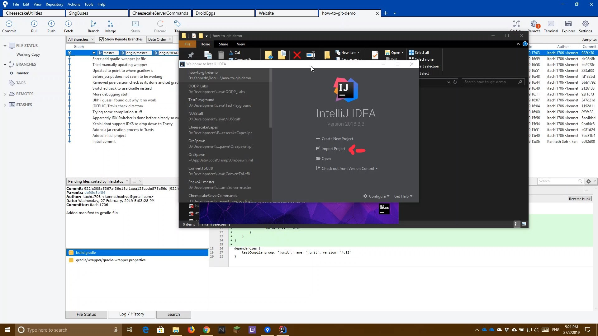

The following guide shows you how to import the cloned repository into JetBrains IntelliJ IDEA IDE Note that this guide only applies to Gradle projects. Other projects may have different steps
Launch IntelliJ IDEA IDE and wait for it to load
Click the Import button If you do not see the screen in the picture below, ensure that you have closed all project windows with File > Close Project

Navigate to the project directory and select the build.gradle file before clicking OK
Ensure that Use default gradle wrapper is selected and click OK
Wait for IntelliJ to finish building the project
The source files are located at src > main > java
To run the project, right click the main source file and select Run
Demo Video The following is a video on how this is being done. Read the how-to guide before watching the video for actual steps to do it